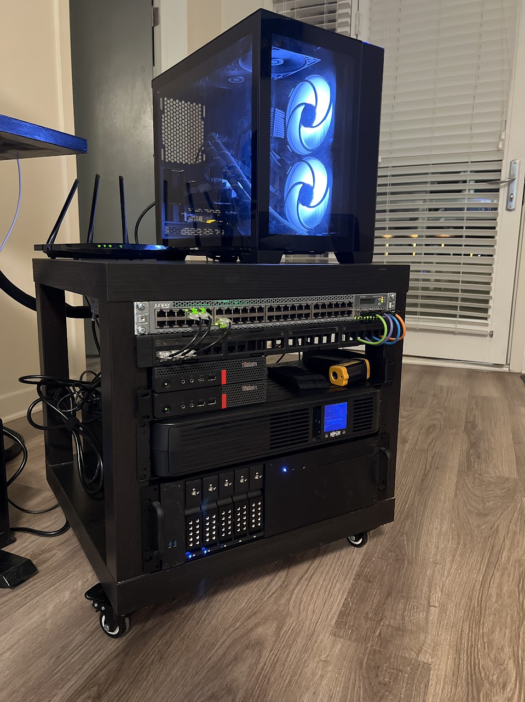
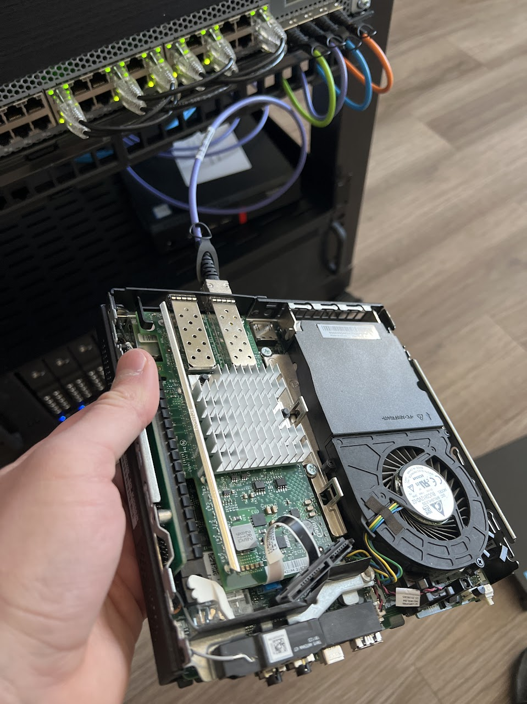
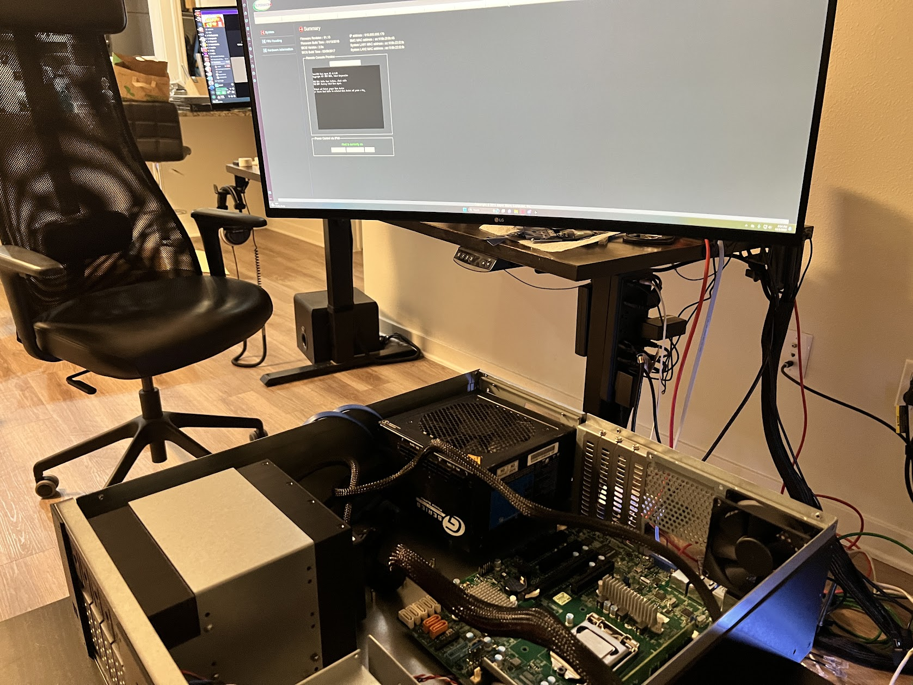
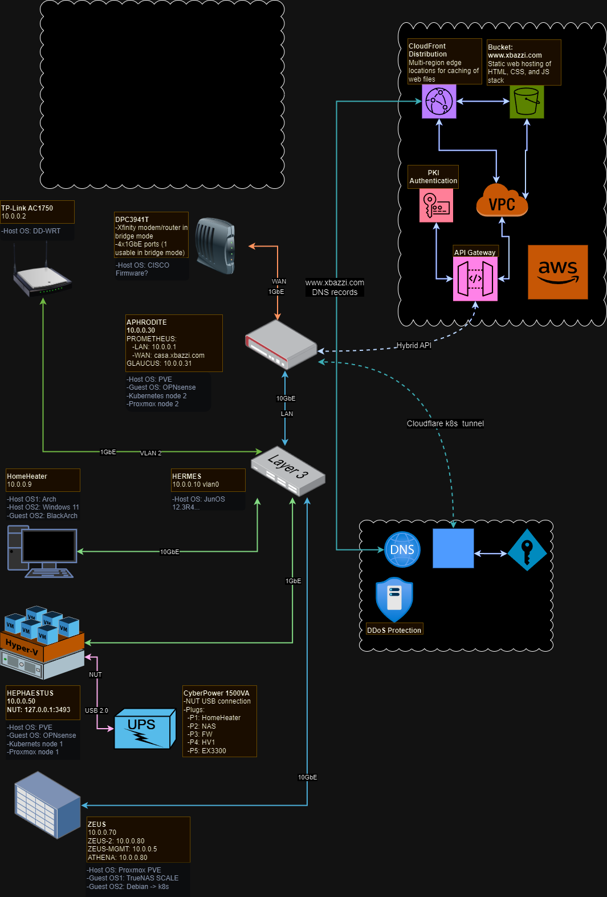

Datacenter at Home
Embarking on a homelab journey often starts with a spark of curiosity and a dash of ambition. At first, my idea was to host my own NAS so that I could unmarry from the cloud; however, this quickly evolved into a multi-server rack with enterprise-level configuration and security. This transformation wasn't just about growth in scale; it was about creating a robust infrastructure capable of supporting my day-to-day digital needs with resilience and efficiency.
At the core of the setup are 3 physical servers, each running Proxmox Virtual Environment, which is a versatile linux-based hypervisor that underpins the entire virtualization framework. All services and workflows run on VMs hosted on the 3 PVE physical servers. Three of these VMs (one in each server) act as master nodes for my k3s cluster; all other VMs are either running appliances or dedicated services. Two of the servers are actually second-hand Lenovo Ultra Small Form Factor PCs, and the third one is built from scratch with a Supermicro board. The latter runs a TrueNAS VM, and sports a 6-drive HDD bay, providing plenty of storage for all my workloads. Since TrueNAS operates with the ZFS file system, it needs direct access to the disks in order to read the SATA metadata; Proxmox facilitates this with physical disk passthrough. The main storage pools are supplemented by a 500 GB NVMe SSD as an L2 cache and 64 GB of RAM for L1 caching. If some data in a pool gets enough hits, it gets cached in RAM, allowing for the full saturation of the 10Gbps line during intensive data transfer operations. Proxmox also supports direct PCI passthrough if I decide to get a dedicated GPU for encoding or AI workloads.

{kind=link}
The network is managed by a virtualized OPNsense appliance with 3 interfaces (2x10gbps SFP+ and 1x1000BASE-T) for WAN, LAN, and DMZ traffic. Logically, the network is segmented by a Juniper EX3300 switch, which comes with 4x SFP+ ports. And every server is equipped with 10Gbps SFP+ NICs, effectively yielding data transfer speeds of up to 10Gbps in the LAN.

{kind=link}
When trying to install PVE in the Supermicro server, I noticed that the only way to output video in the X11SSM board is via a VGA cable. However, the board does come equipped with a BMC chip, allowing for remote control of the server through the IPMI interface. The inclusion of IPMI is common for server motherboards, as it allows for bare-metal, GUI remote management over Ethernet.

{kind=link}
As evidenced in the logical diagram below, the on-premises network is not a just a standalone hyperconverged infrastructure, but a node within a larger network of services, benefiting from the robustness and scalability of cloud solutions while maintaining the personalization and control of a private environment.

{kind=link}
This homelab is more than just a collection of hardware and software; it's an interconnected technology stack that balances performance, security, and scalability. It represents the culmination of a journey from curiosity to critical infrastructure, demonstrating the power of modern virtualization, networking, and storage solutions.
A home datacenter is what most Americans deserve, but don't need.